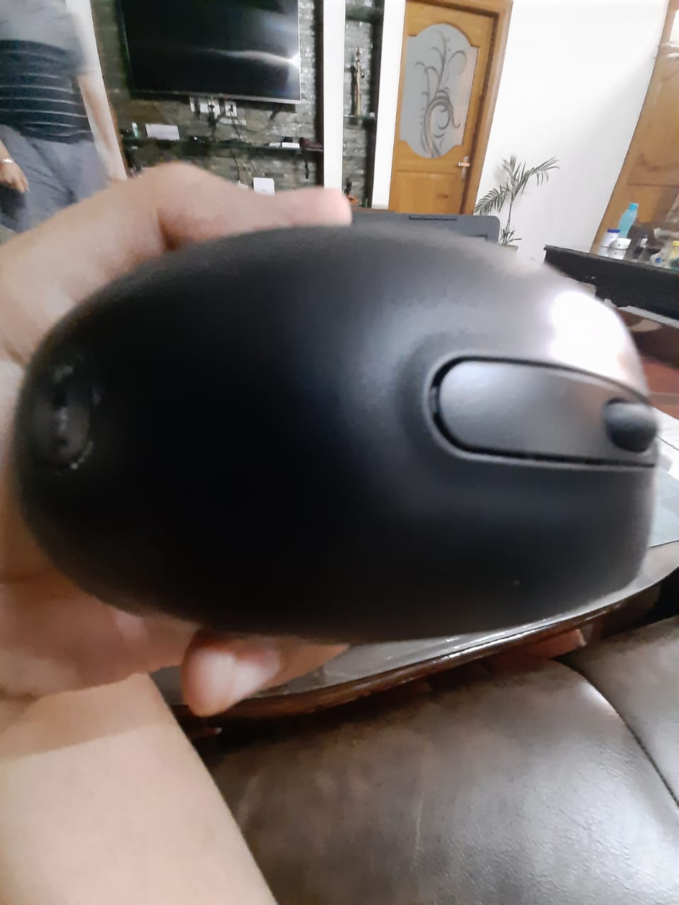
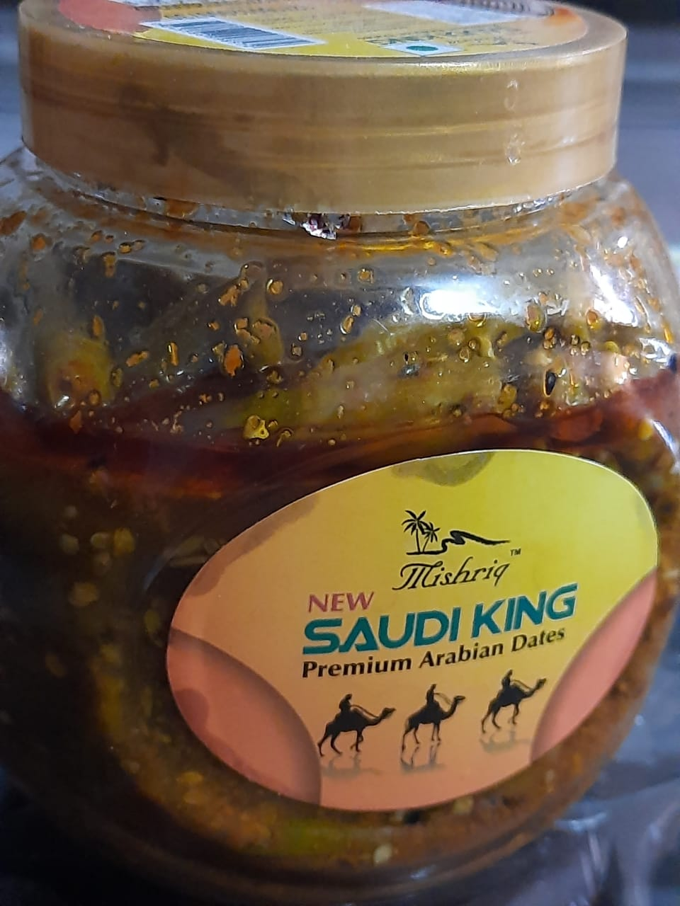
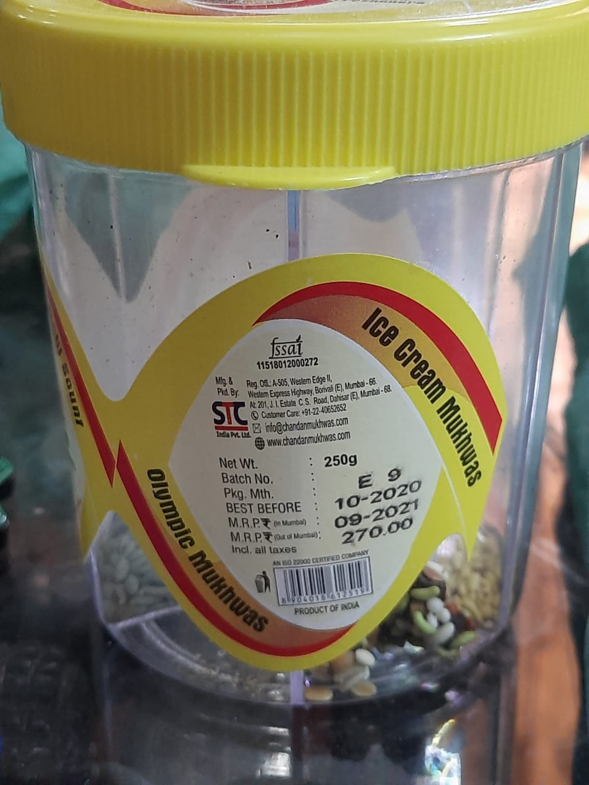
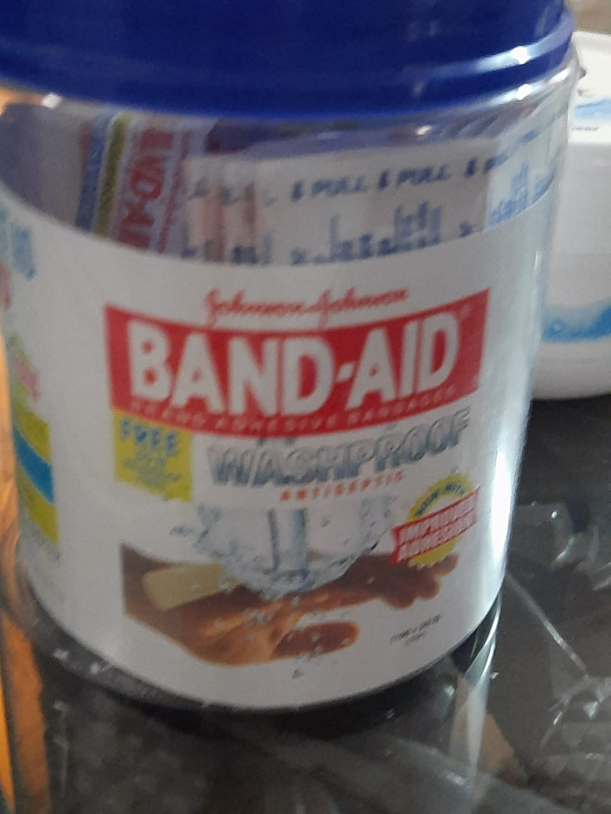
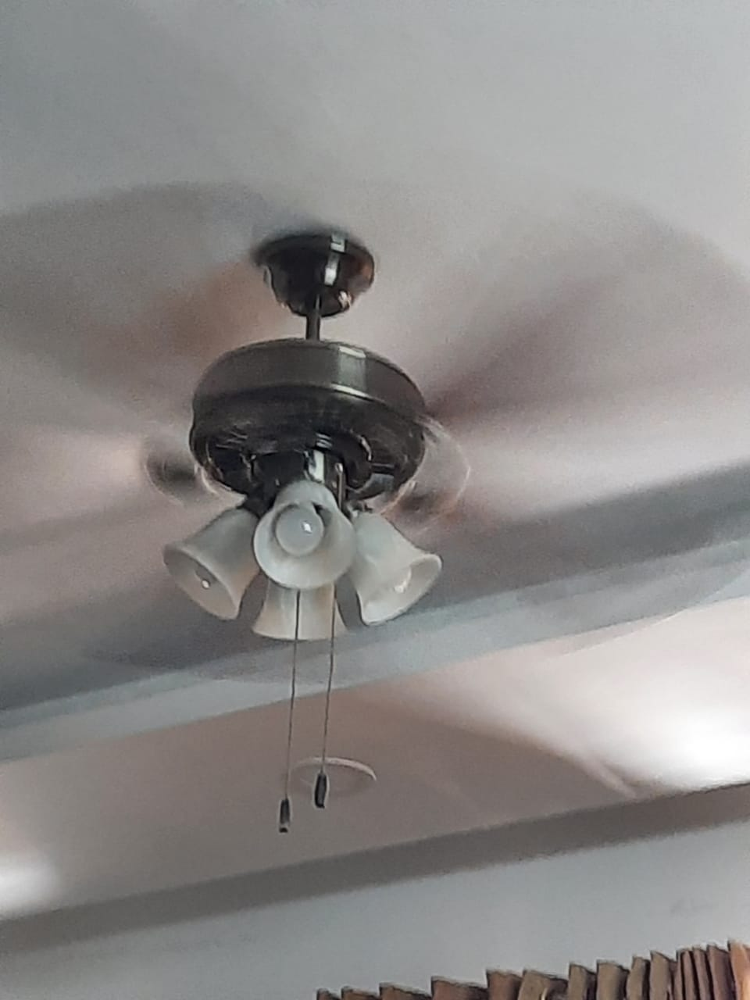

Image Identification App

- TEST IMAGE - 
- TEST IMAGE - 
-
TEST IMAGE -

- TEST IMAGE - 
- TEST IMAGE -
- TEST IMAGE - 
- TEST IMAGE -
- TEST IMAGE - 
OUTPUT ON-
Mircrosoft Azure (wolfram project) - computer mouseOUTPUT ON-
Mobilenet model - laser computer mouseOUTPUT ON-
Mircrosoft Azure (wolfram project) - jarOUTPUT ON-
Mobilenet model - jar of pickleOUTPUT ON-
Mircrosoft Azure (wolfram project) - modemOUTPUT ON-
Mobilenet model - boxOUTPUT ON-
Mircrosoft Azure (wolfram project) - fennel containerOUTPUT ON-
Mobilenet model - containerOUTPUT ON-
Mircrosoft Azure (wolfram project) - diaryOUTPUT ON-
Mobilenet model - logOUTPUT ON-
Mircrosoft Azure (wolfram project) - bandaidOUTPUT ON-
Mobilenet model - bandaid box, first aid kitOUTPUT ON-
Mircrosoft Azure (wolfram project) - water bottleOUTPUT ON-
Mobilenet model - bottleOUTPUT ON-
Mircrosoft Azure (wolfram project) - ceiling fanOUTPUT ON-
Mobilenet model - fanThis is what I think
As per the results, Mobilenet with not being accurate in most results, makes Mircrosoft Azure the most accurate in contest.